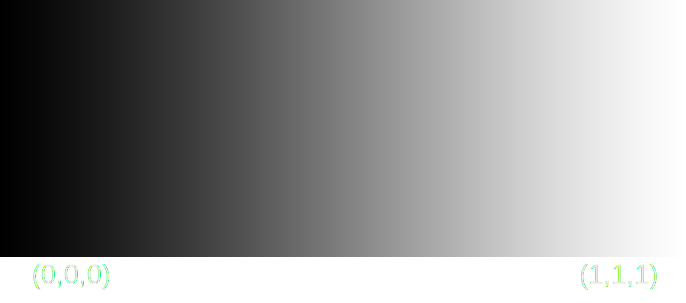

Bases del color
El color digital es un tema complejo que se comlpica cada vez más cuando intentas profundizar en el.
De forma simplificada, se trata de valores entre 0 y 1 (normalizado). Si estas familiarizado en el espacio de color sRGB recordarás que estos valores sin normalizar se mueven entre (0,0,0) y (255,255,255), un total de 2563 colores diferentes.

La cantidad de colores que se pueden formar afectará a la capacidad de manipular el color con software de edición de video.
El espacio de color sRGB de 8 bits no permite una gran manipulación comparado con archivos RAW sin compresión ni espacios de color predeterminados por esta misma razón,
la cantidad de colores es mucho mayor.
Este concepto es un poco contraintuitivo. Los colores que los ojos humanos son capaces de percibir son mucho más
amplios que los que emite una pantalla de ordenador (sRGB)
sRGB
Todos los colores visibles
Como se puede observar, estos colores se comprimen a un rango mucho menor y se perciben con muchos menos matices.
Estas ideas son muy interesantes pero como afecta a un caso práctico?.
Asumamos que los colores visibles solo son los comprendidos en sRGB y que nuestra pantalla solo puede mostrar la mitad de estos colores.
Asumamos que los colores visibles solo son los comprendidos en sRGB y que nuestra pantalla solo puede mostrar la mitad de estos colores.
Colores reales
Colores mostrados por la pantalla
Esta no es una explicación correcta pero solo me interesa esta idea: Los colores reales se comprimen a los colores que puede mostrar una pantalla. Esta operacion se puede realizar en
muchos momentos diferentes durante la vida de una imagen, al tomar la foto, al revelar una foto, etc...